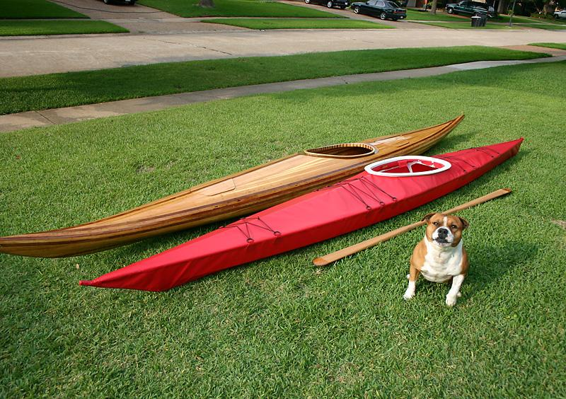

| (New) Sea Tour 15-R by Kent Judkins (US) | Menu Previous Page Next Page |
|

Kent Judkins from Shreveport, Louisiana displays his folding Sea Tour 15-R (457 X 56cm) alongside his nearly completed Guillemot stripper, a Greenland paddle , and his Staffordshire bull terrier. Kent reports a build time of less than 90 hrs for the Sea Tour 15.
|
|